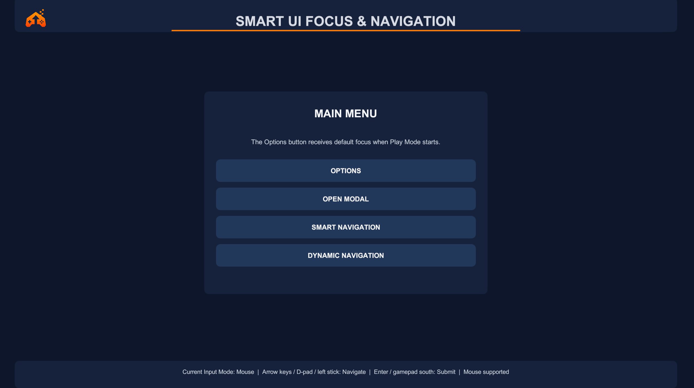

Automatic focus recovery
Recover when the selected control becomes inactive, disabled, or non-interactable.
Reliable controller and keyboard focus for Unity uGUI, designed to work with the UI structure you already have.

Standard uGUI navigation remains in place. Smart UI Focus & Navigation adds focused components for invalid selections, returning menus, modal flows, irregular layouts, and runtime content.
Recover when the selected control becomes inactive, disabled, or non-interactable.
Restore the last valid selection when users leave and return to a menu or focus scope.
Return focus to the exact valid control that opened a modal when it closes.
Observe mouse, keyboard, and gamepad UI activity through Unity's New Input System.
Each focus scope can define a default, remember its last valid control, and recover when the current EventSystem selection can no longer be used.
Push a popup scope when it opens and pop it when it closes. The prior valid selection is restored without replacing Unity's EventSystem.
Runtime-added, removed, reordered, disabled, and reflowed controls can refresh their explicit links after Unity's layout system updates.
Compatible with Unity 2022.3 LTS and Unity 6. Validated with Built-in, URP, and HDRP.
The Asset Store package includes a complete offline PDF covering installation, focus management, input modes, navigation, dynamic UI, API usage, and troubleshooting.
Contact LevelArgento directly at support@levelargento.com.